13 JavaScript in Web Browser: Tic-Tac-Toe and React
In this chapter, we are going to learn one of the most popular framework for writing a JavaScript program. That framework is React.
React ini merupakan JavaScript library yang diperuntukkan untuk membangun tampilan antarmuka (user interface). Tiga fitur utama dari React adalah - Deklaratif - Berbasis pada komponen - Bisa digunakan untuk membangun aplikasi di berbagai platform ( di server menggunakan Node.js dan di perangkat mobile menggunakan React Native)
Berikut ini akan diuraikan tutorial sederhana membangun aplikasi game sederhana Tic-Tac-Toe yang diambil panduan awal di dalam dokumentasi library React.
Tutorial ini akan dibagi menjadi 4 tahap, yaitu: - Instalasi dan persiapan workspace untuk pemgembangan game Tic-Tac-Toe - Gambaran singkat terkait gagasan fundamental di dalam React - Menyelesaikan pembuatan game - Menambahkan fitur time travel atau history permainan (opsional)
Di akhir tutorial ini, kita akan mengerti cara membuat game Tic-Tac-Toe seperti pada gambar di bawah ini:
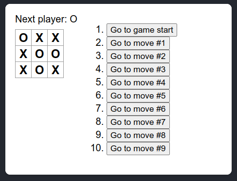
Bagian sebelah kanan yang menunjukkan history permainan dapat dilewati jika dirasa tutorial cukup panjang.
13.1 Setup environment
Tutorial ini dapat juga diakses melalui codesandbox.io tanpa perlu melakukan instalasi secara lokal. Namun kita akan melakukan tutorial untuk versi lokal supaya dapat memahami juga proses instalasi dan persiapan untuk menyusun program menggunakan React.
Disini kita tidak menggunakan React project initialization secara langsung karena alasan keamanan (lihat tulisan berikut: npm audit: Broken by Design). Disini kita akan menggunakan Next.js sebagai React framework.
Langkah-langkah untuk mempersiapkan workspace 1. Install Node.js (lihat kembali pertemuan 1)
Buatlah direktori
tic-tac-toesebagai workspaceDidalam direktori
tic-tac-toe, buatlah filepackage.jsondengan isi empty object sebagai berikut:Buka terminal di VSCode, dan pindah lokasi working directory ke dalam direktori
tic-tac-toe. Lalu jalankan perintah berikut melalui terminal di VSCode,Setelah menjalankan perintah di atas struktur direktori menjadi seperti berikut:
tic-tac-toe/ ├─ node_modules/ ├─ package-lock.json ╰─ package.jsonSusun secara rapi data JSON dalam
package.jsondan tambahkan property berikut setelah propertydependencies(ingat koma pemisah antar property name):Property tersebut akan memberikan kita perintah untuk menjalankan
npm run devmenggunakan Next.js framework.Download dua folder
pagesdanstylesbeserta isinya di GitHub repository SI-201-404-structured-programming. Letakkan kedua folder tersebut di dalam working directorytic-tac-toe, sehingga didapatkan susunan direktori sebagai berikut:tic-tac-toe/ ├─ node_modules/ ├─ pages/ │ ├─ _app.js │ ├─ App.js │ ╰─ index.js ├─ styles/ │ ╰─ styles.css ├─ package-lock.json ╰─ package.jsonJalankan
npm run devdi terminal (posisi working directory berada di direktoritic-tac-toe). Tunggu sampai Next.js selesai melakukan compiling seperti pada gambar di bawah ini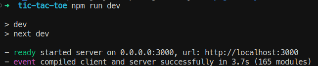
dan kemudian buka alamat berikut di web browser:
localhost:3000. Jika berhasil akan didapatkan tampilan seperti berikut: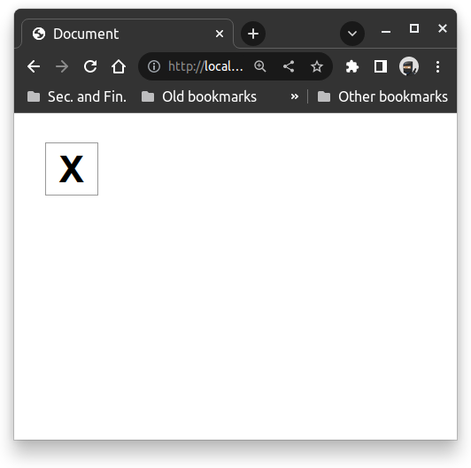
13.2 Short overview of Tic-Tac-Toe program and React
Selama pengembangan program ini kita akan membuka secara bersamaan
VSCode dan web browser (dalam contoh ini akan di pakai Google
Chrome Web Browser). Ketika kita mengetikkan perintah di terminal
npm run dev, Next.js framework akan senantias terus menerus
melakukan fast refresh ketika ada di perubahan dalam program
yang kita ketikan di VScode, sehingga setiap perubahan
(selama kode benar) akan segera di tampilkan ke web browser.
Apabila terjadi sesuatu yang tidak semestinya seperti bug,
maka cukup dilakukan perintah penghentian localhost dengan
menekan tombol Ctrl+C di terminal VSCode.
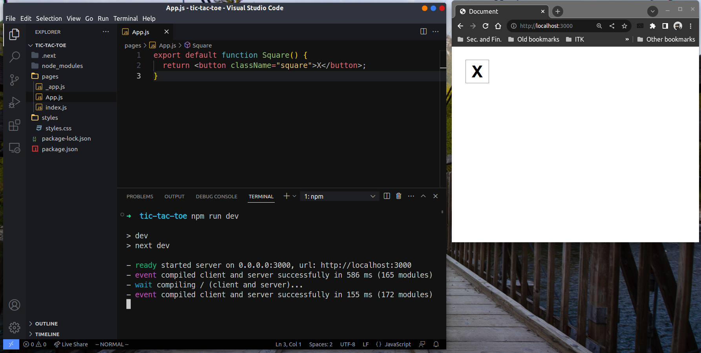
13.2.1 Isi folder pages dan styles.
Selama proses pembuatan program Tic-Tac-Toe, kita akan
sering mengedit file App.js.
13.2.1.1 App.js
Di dalam file App.js terdapat potongan kode JavaScript berikut:
Potongan kode di atas merupakan fungsi JavaScript bernama
Square() tanpa parameter (input). Keyword export menunjukkan
bahwa fungsi ini akan di-export supaya bisa dipanggil oleh berkas
lain (yaitu index.js). Keyword default merupakan penunjuk
bahwa secara default fungsi ini akan di-export apabila
terdapat lebih dari satu fungsi di dalam file App.js.
Fungsi Square() ini akan dipanggil dan memberikan output di
web browser sebagai suatu kotak yang berisi huruf “X”.
Pada bagian return, kita melihat terdapat HTML element <button>
dengan attribute className="square". Attribute ini akan
secara otomatis melakukan look-up terhadap styles.css yang
terdapat dalam folder styles. Kita melihat disini terdapat
campuran sintaks HTML dan JavaScript, kode semacam ini
disebut JSX (JavaScript XML).
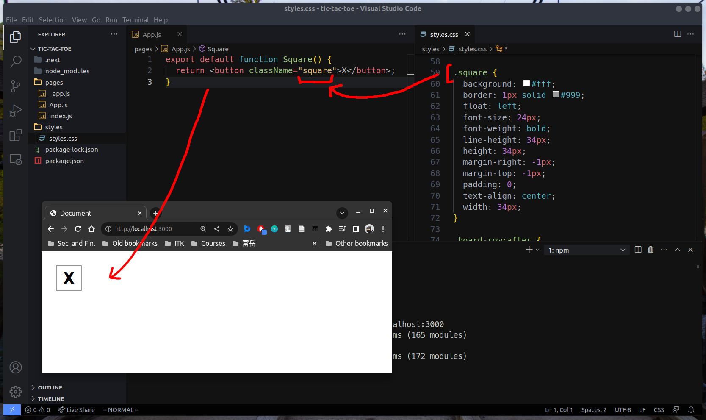
13.2.1.2 styles.css
Merupakan file yang digunakan untuk mengatur styling dari
HTML element, seperti elemen <button> yang diatur
oleh className="square" yang secara otomatis
memanggil styling .square dari file styles.css.
Ada beberapa classNames yang telah diatur styling nya
dan akan digunakan selama pembuatan
program:
- .board-row
- .status
- .game
- .game-info
13.2.1.3 index.js
import App from './App';
import Head from 'next/head';
export default function HomePage() {
return (
<>
<Head>
<title>Document</title>
</Head>
<div id="root">
<App />
</div>
</>
);
}Dua baris import di atas digunakan untuk memanggil fungsi
Square di App.js yang akan memberikan keluaran (return value)
berupa element <button>. Element <button> ini akan diapit
(wrapped) dalam element <div id="root"> </div>.
Element <Head> merupakan komponen dalam Next.js yang digunakan
untuk menambahkan komponen di dalam element <head> HTML.
File ini menjadi jembatan antara App.js dan web browser.
Di dalam tutorial ini, kita tidak akan menyentuh file ini.
13.2.1.4 _app.js
import '../styles/styles.css';
export default function App({ Component, pageProps }) {
return <Component {...pageProps} />;
}Merupakan file default dari Next.js framework yang harus ada
untuk menjembatani antara styling styles.css dan HTML
yang di-generate oleh React. Semua file .css yang
ada di dalam folder styles ini akan mempengaruhi styling
website secara global. Untuk melakukan styling secara tersendiri
untuk masing-masing halaman web dapat dilihat pada tutorial
Create Your First App di dokumentasi Next.js.
Disini kita tidak menggunakan prosedur tersebut.
13.2.2 Membuat papan permainan Tic-Tac-Toe
Untuk membuat papan permainan Tic-Tac-Toe yang terdiri
dari 9 kotak yang disusun dalam grid 3x3, pertama
kita mencoba untuk menggandakan setiap <button> element
di dalam file App.js.
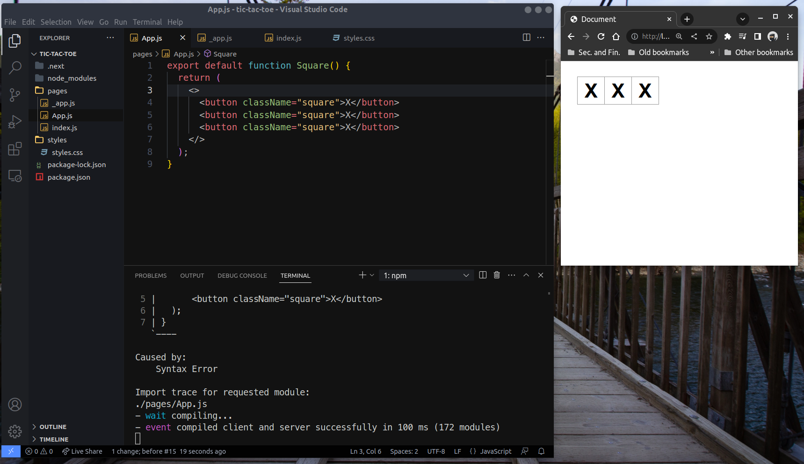
Pada kode di App.js, kita menambahkan dua buah <button>
element dan apitan <> </>. Apitan ini dikenal sebagai
Fragment element dalam komponen React. Fragment element ini
bertujuan untuk dapat memberikan keluaran HTML element
yang saling bersebelahan dan dijadikan satu grup nilai luaran.
Sama seperti halnya Array untuk mengumpulkan beberapa nilai menjadi satu, Fragment element digunakan untuk menyatukan
beberapa HTML element menjadi satu element besar.
Lalu terakhir keluaran ini perlu diapit oleh tanda kurung ()
yang menyatakan keluaran ini dilihat sebagai satu expression,
export default function Square() {
return (
<>
<button className="square">X</button>
<button className="square">X</button>
<button className="square">X</button>
</>
);
}Untuk membuat papan permainan Tic-Tac-Toe 3x3, kita
perlu membagi setiap tiga buah buton dengan elemmnt <div>.
Agar setiap pembagian <div> berada di baris berikutnya
(tersusun vertikal)
maka kita dapat menambahkan pengaturan styling .board-row
yang sudah disediakan di dalam styles.css dan cukup memanggilnya
dengan menambahkan className="board-row"
Karena kita telah menyusun papan,
kita tidak lagi menamakan fungsi di dalam App.js ini
sebagai Square() melainkan sebagai Board()
dan juga untuk mempermudah penyusunan program kedepan
kita ganti teks “X” di setiap <button> dengan
teks 1, 2, 3, …, 9. Hasil akhir file App.js adalah sebagai
berikut
export default function Board() {
return (
<>
<div className="board-row">
<button className="square">1</button>
<button className="square">2</button>
<button className="square">3</button>
</div>
<div className="board-row">
<button className="square">4</button>
<button className="square">5</button>
<button className="square">6</button>
</div>
<div className="board-row">
<button className="square">7</button>
<button className="square">8</button>
<button className="square">9</button>
</div>
</>
);
}dan mendapatkan tampilan akhir di browser.
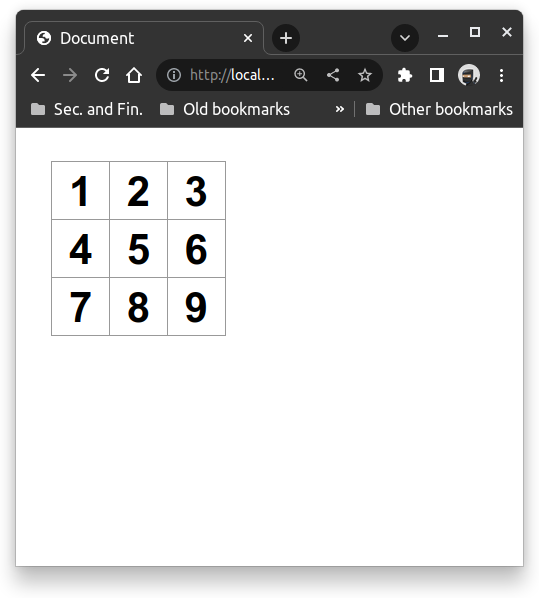
13.2.3 React props untuk data manipulasi komponen Square
React props merupakan nama lain untuk data yang dapat
kita sematkan ke HTML element. Dengan gabungan fungsi
HTML element dari bawaan framework React dan props
kita dapat membangun HTML element dengan attribute
dan text terapit lebih dinamik (nilainya dapat kita
ubah-ubah sesuai kebutuhan tanpa harus menulis ulang
HTML element)
Seperti kita ketahui di dalam fungsi Board() di file
App.js, kita menuliskan sembilan kali <button>.
Kita dapat menuliskan fungsi Square() untuk masing-masing
kotak, dan memanggil fungsi Square() di dalam Board().
Sehingga App.js menjadi
function Square({ value }) {
return <button className="square">{value}</button>
}
export default function Board() {
return (
<>
<div className="board-row">
<Square value="1"/>
<Square value="2"/>
<Square value="3"/>
</div>
<div className="board-row">
<Square value="4"/>
<Square value="5"/>
<Square value="6"/>
</div>
<div className="board-row">
<Square value="7"/>
<Square value="8"/>
<Square value="9"/>
</div>
</>
);
}React props di atas diwakili oleh parameter value
dalam kelas Square() di atas. Perlu diingat React props
disini merupakan object sehingga ketika diinputkan ke dalam
pendefinisian Square() kita perlu melakukan destructuring
atau dalam kata lain menambahkan tanda kurung kurawal.
Demikian juga selama dalam lingkup HTML element, parameter
value harus diapit dalam kurung kurawal (ingat kesamaan
ini dengan penandaan variable di template literal).
Hasil didapatkan seperti sebelumnya namun kode JavaScript
kita lebih terstruktur dan lebih modular (terpisah-pisah
dengan jelas tiap komponennya)
13.2.4 Menambahkan interactivity
Tahap berikutnya adalah menambahkan fungsi callback handleClick
pada attribute di element <button> di dalam komponen Square().
Fungsi handleClick ini nantinya akan terpicu ketika
user melakukan klik terhadap kotak-kotak komponen Square()
di dalam komponen Board() dan lalu melakukan setting nilai
teks isian element <button> menjadi “X”.
Pertama kita buat fungsi callback handleClick() dan
mengubah komponen Square() sebagai berikut:
function handleClick() {
console.log("clicked");
}
function Square({ value }) {
return (
<button
className="square"
onClick={handleClick}
>
{value}
</button>
);
}Pada potonga update kode bagian komponen Square() di atas
terlihat bahwa fungsi callback handleClick() akan
melakukan print out ke console setiap Square() element
di klik pada papan permainan Board(). Kita jadikan fungsi
callback ini sebagai nilai attribute element <button>
untuk property onclick.
Pada gambar di bawah ini terlihat jika kita melakukan
proses klik ke semua kotak (sembilan kali klik),
maka console di bagian Developer Tools web browser akan
mencetak sembilan kali pesan clicked (tertera angka 9)
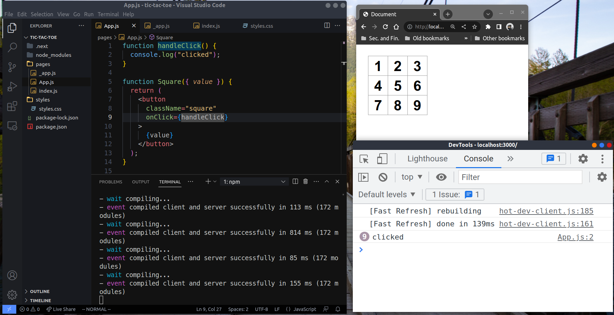
Untuk bisa menyimpan nilai “X” di masing-masing komponen
Square() ketika dilakukan klik, kita perlu suatu object
baru untuk mengingat hal ini. React menyediakan object ini
sebagai suatu state. Karena ada sembilan kotak, maka
setiap kotak harus dapat menyimpan masing-masing state
dan juga kita harus bisa memanipulasi setiap state ini
dari tidak ada teks “X” menjadi ada.
Berikut adalah update terakhir untuk fungsi callback handleClick() dan Square()
import { useState } from 'react';
function handleClick(setValue) {
setValue("X");
}
function Square() {
const [value, setValue] = useState(null);
return (
<button
className="square"
onClick={() => handleClick(setValue)}
>
{value}
</button>
);
}Pertama kita melakukan import object useState dari React library.
Kemudian kita inisialisasi state dengan nilai null melalui
pemanggilan object useState(null). Keluaran dari
object useState merupakan dua buah object. Yang pertama
adalah variable value yang akan menyimpan state
dan yang kedua adalah setValue digunakan sebagai fungsi
untuk mengubah state.
Terlihat juga bahwal fungsi callback handleClick memiliki
tambahan parameter setValue yang akan mengupdate nilai
value ketika element <button> di klik oleh user.
Kita melihat juga, nilai dari attribute onclick merupakan
suatu callback function yang memamnggil fungsi handleClick.
Kita tidak bisa mengatur secara langsung onclick={handleClick(setValue)} karena dengan melakukan seperti itu kita tidak
lagi memberikan callback function namun memberikan nilai
return dari handleClick.
Kita juga tidak lagi memerlukan argument di komponen
Square(), maka attribute value saat pemanggilan Square()
di komponen Board() tidak perlu lagi dilakukan, sehingga
didapatkan bentuk akhir komponen Board() sebagai berikut:
export default function Board() {
return (
<>
<div className="board-row">
<Square />
<Square />
<Square />
</div>
<div className="board-row">
<Square />
<Square />
<Square />
</div>
<div className="board-row">
<Square />
<Square />
<Square />
</div>
</>
);
}Jika telah selesai update komponen Square()
dan Board() di atas maka kita bisa lihat perubahan
Square() element ketika dilakukan klik seperti
pada gambar di bawah ini
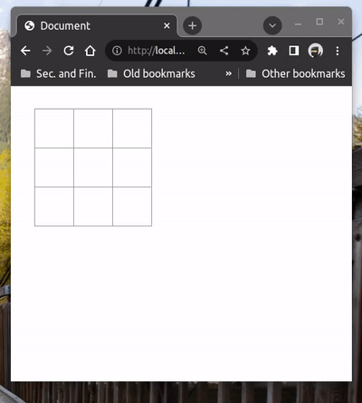
13.3 Finishing the base program of Tic-Tac-Toe
Jika telah sampai tahap ini, kita telah membangun kerangka dasar permainan Tic-Tac-Toe dan tinggal menambahkan fitur-fitur tambahan lainnya agar dapat bergantian mengisi kotak dengan “X” dan “O”. Serta juga penentuan akhir permainan siapa yang menang atau terjadi draw.
Sejauh ini kita masih menyimpan semua state permainan di
masing-masing komponen Square(). Pendekatan ini masih
mengharuskan kita untuk menyusun mekanisme
komunikasi antar Square() terkait state mereka.
Penulisan program dengan mekanisme state di setiap Square()
akan menghasilkan program yang cukup rumit dipahami dan
amat susah untuk di lakukan refactor (mekaniseme
untuk memecah program menjadi bagian-bagian kecil komponen yang
saling independen dan dikoordinasi oleh satu komponen besar).
Pendekatan yang lebih baik adalah kita menyimpan semua state
dari komponen Square() di dalam komponen Board() lalu
mengkomunikasikan state dan callback function
ke setiap Square(). Apabila terjadi suatu clicked event oleh
user di suatu Square(), callback function yang didistribusikan
ini akan dipanggil dan memicu perubahan state di komponen
Board(). Lalu komponen Board() akan mengkomunikasikan
kembali perubahasa state ini ke komponen Square() tersebut.
Jika digambarkan proses di atas adalah sebagai berikut:
Mekanisme perubahan state oleh`Board() 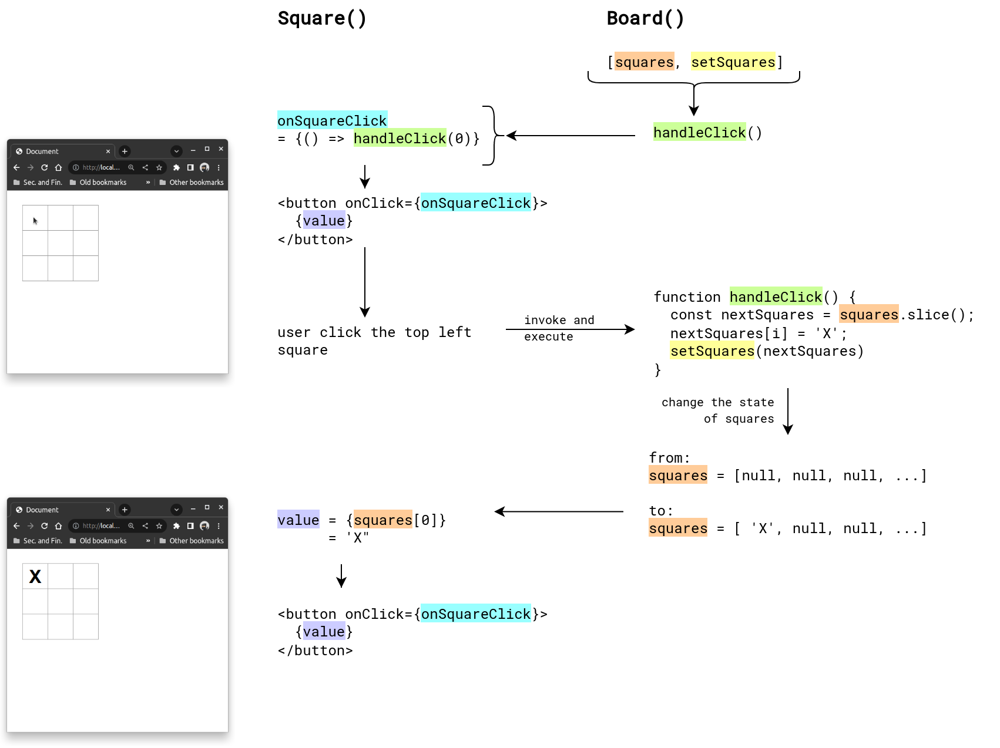
13.3.1 Memindahkan useState dari Square() ke Board() (lifted up)
Seperti yang telah dijelaskan di paragraf sebelumnya.
Kita susun terlebih dahulu sembilan buah state di Board().
Kita juga mendeklarasikan fungsi handleClick() dengan
parameter nomor urut Square(), state semua Squares()
(dalam variable squares) dan fungsi untuk mengubah-ubah
state squares (yaitu setSquares).
Di dalam fungsi callback handleClick ini, kita melakukan
penggandaan Array squares menggunakan array method
.slice(). Kita perlu menggandakan Array state ini dengan tujuan
untuk fitur tambahan history di bagian terakhir pembuatan
program ini.
function handleClick(i, squares, setSquares) {
const nextSquares = squares.slice();
nextSquares[i] = 'X';
setSquares(nextSquares);
}
export default function Board() {
const [squares, setSquares] = useState(Array(9).fill(null));
return (
<>
<div className="board-row">
<Square
value={squares[0]}
onSquareClick={() => handleClick(0, squares, setSquares)}/>
<Square
value={squares[1]}
onSquareClick={() => handleClick(1, squares, setSquares)}/>
<Square
value={squares[2]}
onSquareClick={() => handleClick(2, squares, setSquares)}/>
</div>
<div className="board-row">
<Square
value={squares[3]}
onSquareClick={() => handleClick(3, squares, setSquares)}/>
<Square
value={squares[4]}
onSquareClick={() => handleClick(4, squares, setSquares)}/>
<Square
value={squares[5]}
onSquareClick={() => handleClick(5, squares, setSquares)}/>
</div>
<div className="board-row">
<Square
value={squares[6]}
onSquareClick={() => handleClick(6, squares, setSquares)}/>
<Square
value={squares[7]}
onSquareClick={() => handleClick(7, squares, setSquares)}/>
<Square
value={squares[8]}
onSquareClick={() => handleClick(8, squares, setSquares)}/>
</div>
</>
);
}Berikutnya kita melakukan perubahan pada kompone Square() sehingga mampu
menerima dua input property: value dan onSquareClick.
Disini komponen Square() hanya berperan sebagai penerima user input
ketika user melakukan klik dengan mouse dan kemudian menerima response
dari komponen Board() update squares untuk posisi di kotak yang di klik
(lihat mekanisme pencetakan teks ‘X’ di gambar
Mekanisme perubahan state oleh Board()). Dan
juga komponen Square() hanya berfungsi untuk menampilkan
state yang sedang berlangsung (atau dalam hal ini nilai
squares).
Berikut adalah perubahan kode untuk komponen Square()
function Square({ value, onSquareClick}) {
return (
<button className="square" onClick={onSquareClick} >
{value}
</button>
);
}Hasil akhir yang didapatkan tetap sama, namun kode yang kita tulis lebih struktur dan mudah untuk dipahami.
13.3.2 Kondisi untuk menambahkan pergantian pemain
Fitur berikutnya yang dibangun adalah pergantian pemain ketika melakukan klik di tempat berbeda. Pemain awal yang akan memulai terlebih dahulu adalah pemain dengan tanda “X” dilanjutkan pemain dengan tanda “O”, demikian seterusnya bergantian.
Untuk bisa melakukan pergantian pemain, kita butuh suatu
state untuk mencatat kondisi pemain manakah yang akan
mengklik kotak Square().
Disini kita membuat state dan setState-nya untuk state
ini dari React framework sebagai xIsNext dan setXIsNext.
State ini akan menyimpan nilai boolean (true atau false)
yang menyatakan bahwa proses klik ke kotak Square()
adalah untuk pemain X atau tidak.
Untuk dapat menggunakan state xIsNext kita perlu mengubah callback function handleClick() dengan menambahkan beberapa kondisi:
1. Jika state untuk kotak ke-i tidak kosong (bukan null)
dalam program kita dinyatakan dalam squares[i]
maka kita tidak perlu mengganti isian kotak Square().
2. Jika state untuk xIsNext adalah true maka kita akan
melakukan isian kotak Square() (diposisi manapun
ketika kotak diklik) dengan ‘X’.
3. Jika states untuk xIsNext adalah false maka kita akan
melakukan isian kotak Square() (diposisi manapun
ketika kotak diklik) dengan ‘O’.
4. Setelah melakukan opsi (2) atau (3), state untuk xIsNext
harus dinegasi (dari true menjadi false atau sebaliknya)
supaya langkah berikutnya (ketika user melakukan klik
pada kotak berikutnya) adalah pemain yang lain.
Implementasi kondisi (1) sampai (4) di atas akan membuat program
kita melakukan pergantian isian teks “X” dan “O” setiap melakukan
klik kotak yang berbeda. Berikut perubahan yang terjadi dalam
kode program untuk bagian fungsi callback handleClick()
dan komponen Board().
function handleClick(i, squares, setSquares, xIsNext, setXIsNext) {
if (squares[i]) {
return;
}
const nextSquares = squares.slice();
if (xIsNext) {
nextSquares[i] = 'X';
} else {
nextSquares[i] = 'O';
}
setSquares(nextSquares);
setXIsNext(!xIsNext);
}
// Square() compoonent does not change
export default function Board() {
const [xIsNext, setXIsNext] = useState(true);
const [squares, setSquares] = useState(Array(9).fill(null));
return (
<>
<div className="board-row">
<Square
value={squares[0]}
onSquareClick={() => handleClick(
0, squares, setSquares, xIsNext, setXIsNext)}/>
<Square
value={squares[1]}
onSquareClick={() => handleClick(
1, squares, setSquares, xIsNext, setXIsNext)}/>
<Square
value={squares[2]}
onSquareClick={() => handleClick(
2, squares, setSquares, xIsNext, setXIsNext)}/>
</div>
<div className="board-row">
<Square
value={squares[3]}
onSquareClick={() => handleClick(
3, squares, setSquares, xIsNext, setXIsNext)}/>
<Square
value={squares[4]}
onSquareClick={() => handleClick(
4, squares, setSquares, xIsNext, setXIsNext)}/>
<Square
value={squares[5]}
onSquareClick={() => handleClick(
5, squares, setSquares, xIsNext, setXIsNext)}/>
</div>
<div className="board-row">
<Square
value={squares[6]}
onSquareClick={() => handleClick(
6, squares, setSquares, xIsNext, setXIsNext)}/>
<Square
value={squares[7]}
onSquareClick={() => handleClick(
7, squares, setSquares, xIsNext, setXIsNext)}/>
<Square
value={squares[8]}
onSquareClick={() => handleClick(
8, squares, setSquares, xIsNext, setXIsNext)}/>
</div>
</>
);
}Di bagian Board() terlihat deklarasi state
untuk xIsNext dan fungsi untuk pengubahannya
setXIsNext. State ini akan terus berubah
dari state awal null lalu true
lalu false lalu true, demikian seterusnya
bolak balik true dan false hingga semua kotak
terisi.
Jika kita melihat program di atas kita masih perlu mengubah
satu-satu pemanggilan elemen <Square> dengan attribute
handleClick yang berbeda. Di bagian
Self-exercise kita akan mengeksplorasi
penulisan kode agar kita hanya cukup menuliskan
komponen
Hasil akhir yang didapatkan dari penambahan fitur pergantian permain adalah sebagai berikut:
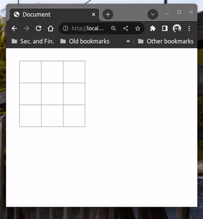
Dari animasi di atas masih tersisa satu bagian lagi yaitu penentuan pemenang, seperti terlihat program permainan yang kita buat masih sangat bersih tanpa ada notifikasi pemain yang menang.
13.3.3 Menambahkan fitur pemberitahuan untuk pemenang
Untuk menentukan pemain yang menang, kita perlu tahu semua kondisi menang ketika kombinasi nomor kotak-kotak ini terisi dengan teks yang sama (semua ‘X’ atau semua ‘O’)
[0, 1, 2], // horizontal atas
[3, 4, 5], // horizontal tengah
[6, 7, 8], // horizontal bawah
[0, 3, 6], // vertikal kiri
[1, 4, 7], // vertikal tengah
[2, 5, 8], // vertikal kanan
[0, 4, 8], // diagonal dari kiri atas ke kanan bawah
[2, 4, 6], // diagonal dari kanan atas ke kiri bawahPerlu diingat, setiap proses klik kotak Square() kita harus
memeriksa kondisi menang yang sudah disebutkan di atas.
Jadi sangat jelas, syarat menang tersebut harus disisipkan
dalam fungsi callback handleClick().
Ketika menang fungsi callback handleClick() harus berhenti.
Untuk itu kita perlu membuat suatu fungsi baru untuk menentukan
apakah ketika user melakukan klik pada suatu kotak, kondisi menang
sudah terpenuhi atau tidak.
Kita sebut fungsi baru itu calculateWinner().
Kita dapat letakkan fungsi ini sesudah deklarasi komponen
Block()
function calculateWinner(squares) {
const lines = [
[0, 1, 2],
[3, 4, 5],
[6, 7, 8],
[0, 3, 6],
[1, 4, 7],
[2, 5, 8],
[0, 4, 8],
[2, 4, 6],
];
for (let i = 0; i < lines.length; i++) {
const [a, b, c] = lines[i];
if (squares[a] && (squares[a] === squares[b]) && (squares[a] === squares[c])) {
return squares[a];
}
}
return null;
}Terlihat dari kode di atas, kita melakukan semua uji posisi menang
dengan cara melakukan iterasi ke array dimensi 2, lines.
Kemudian di setiap iterasi dilakukan pengujian apakah isian teks Squares
(dalam hal ini diwakili oleh state squares) berisi teks ’X” semua atau
’O” semua. Dan juga perlu dipastikan bahwa state ini tidak boleh null
(diwakili oleh kondisi pertama squares[a])
Jika semua syarat menang tidak dipenuhi maka fungsi calculateWinner akan
memberikan keluaran berupa null.
Tahap berikutnya adalah memanggil fungsi calculateWinner() ini di dalam
fungsi callback handleClick() serta penulisan pesan pemain yang menang.
Berikut perubahan kode untuk fungsi callback handleClick() dan
komponen Board()
function handleClick(i, squares, setSquares, xIsNext, setXIsNext) {
if (squares[i] || calculateWinner(squares)) {
return;
}
// the rest of lines are the same as before
}export default function Board() {
const [xIsNext, setXIsNext] = useState(true);
const [squares, setSquares] = useState(Array(9).fill(null));
const winner = calculateWinner(squares);
let statusText;
if (winner) {
statusText = "Winner: " + winner;
} else {
statusText = "Next player: " + (xIsNext ? "X" : "O");
}
// the rest of lines are the same as before
}Berikut hasil program ketika dilakukan proses klik
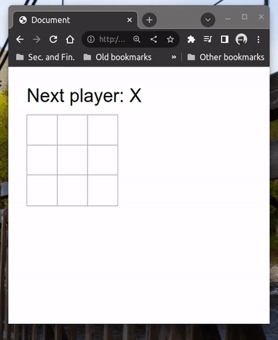
Jika sudah sampai pada titik ini berarti kita sudah menyelesaikan program Tic-Tac-Toe untuk fitur paling dasar. Masih ada tambahan fitur yang masih bisa dikembangkan seperti pemberitahuan ketika terjadi draw, fitur time travel untuk menampilkan history langkah, dan fitur penanda kotak-kotak bagi pemenang (perlu mengubah CSS element). Semua fitur tambahan itu dapat di baca pada subtopik opsional berikutnya tentang time travel dan di bagian Self-exercise.
13.4 Additional features: “Time travel” for player’s steps
[Akan ditambahkan nanti, tunggu dengan sabar . . .]
Exercises
- Gantilah text dalam tombol history, sehingga menjadi tertulis “You are at move #…”.
- Tulis ulang komponen
Squaredi dalamBoardmenggunakan dua loops. - Tambahkan tombol on-off (toggle button) untuk mengurutkan urutan langkah dari awal sampai akhir (atau susunan sebaliknya)
- Ketika ada pemain yang menang, tambahkan penanda
(highlight) ke kotak-kotak
BoardTic-Tac-Toe untuk pemain yang menang. Jika terjadi draw, tampilkan pesan bahwa terjadi hasil pertandingan draw (seimbang) - Tampilkan lokasi setiap langkah dalam format (baris, kolom) di setiap daftar history langkah.